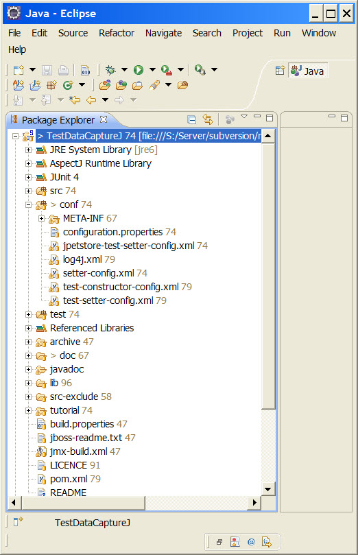
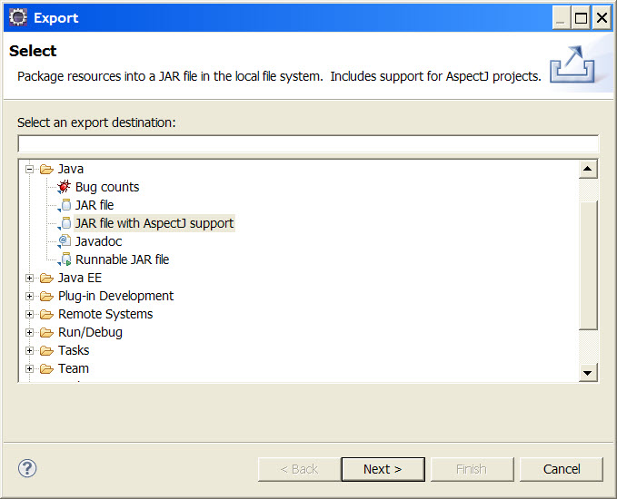
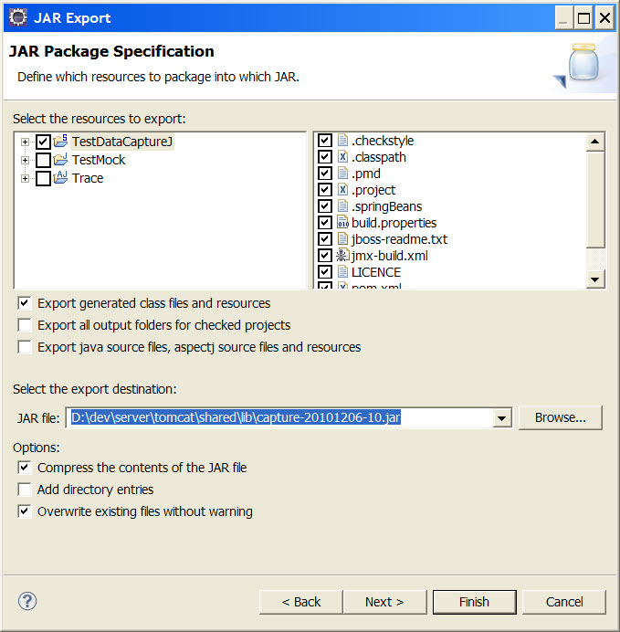
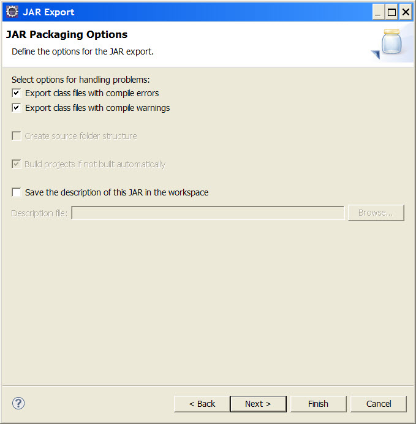
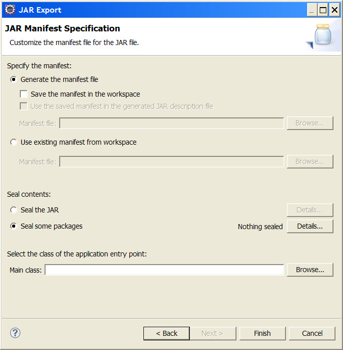
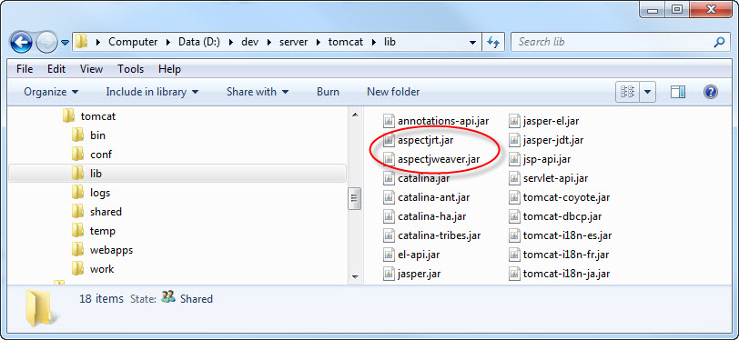
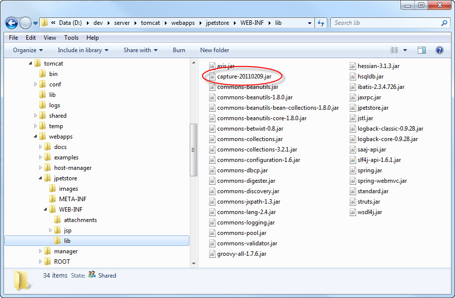
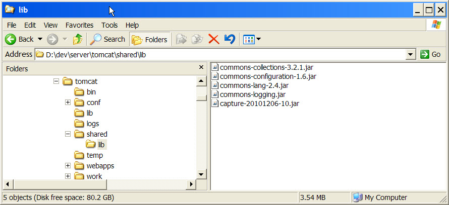
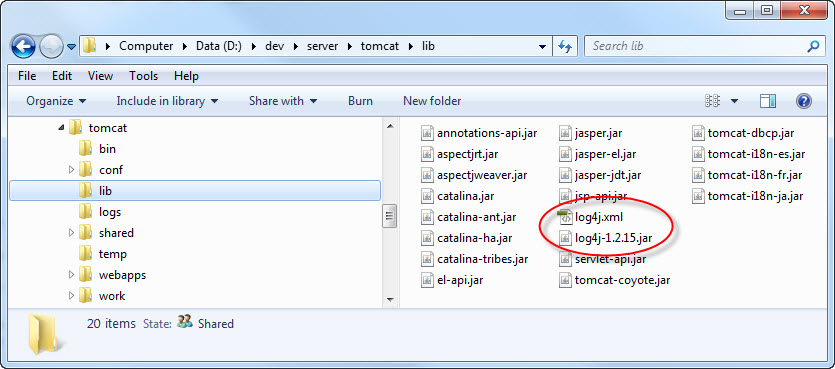

Table of Contents
The following prerequisite software is required, has only been tested in a Windows environment.
Eclipse Java IDE (Juno 4.2) http://www.eclipse.org
AJDT, the AspectJ plugin for Eclipse http://www.eclipse.org/ajdt
AspectJ (i.e. the version that matches the AspectJ version from the ADJT plugin that you are using) http://www.eclipse.org/aspectj
Dependency utility jars:
Apache commons-collections
Apache commons-configuration
Apache commons-lang
Apache commons-logging
Logging framework jars:
LogBack
The use of Log4j is deprecated for the project, but can still be used instead of LogBack if required.
Groovy (for Groovy configuration file in LogBack)
Apache Tomcat 6.x or 7.x for testing in a web application or for trying the tutorial example. These are the application servers that have been tested on so far.
To go through the tutorial you will also need the Spring JPetStore sample application. This can downloaded as part of the Spring Framework download or from https://src.springframework.org/svn/spring-maintenance/trunk/samples/jpetstore/ .
Note that the project is distributed as source code within an Eclipse IDE project. TestDataCaptureJ requires the Eclipse IDE for the build once it has been configured for the application you want to test. Currently there is no build script for it.
Install the Eclipse IDE, this usually just involves unzipping the downloaded file to a location of your choosing.
Install the ADJT plugin into Eclipse.
Get the TestDataCaptureJ project, either from version control (using Git) or download testdatacapturej-xxx.zip and unzip it.
Import TestDataCaptureJ into the Eclipse IDE as an existing project.
Currently has only been tested running web applications on Tomcat 6.x and JBoss AS 4.x so you will need to run your test application, i.e. the application that you want to capture test data on, on one of these app servers.
Please note that I am a developer, not a server admin expert, so while I've illustrated how to configure the server - it's not necessary the best way to do it.
Install the app server, if required.
Deploy your test web application to the app server and ensure that it runs properly, especially at the point that you want to capture the test data, e.g. at the end of the checkout process for a shopping application. Then stop the app server so that it can be configure and setup for TestDataCaptureJ.
Configure the project to intercept the application at the point where you want to capture the test data. You will need access to the source code or the API for the test application to determine the best place for this. Also you will need to know about how to configure AspectJ pointcuts, refer the the AspectJ documentation for this.
Edit conf/META-INF/aop.xml in the TestDataCaptureJ project in
Eclipse by adding a <concrete-aspect> tag to the xml file nested inside the
<aspects> tag. Following the template in the listing below, you need to:
Create a valid Java class name for the 'name' attribute.
Create an AspectJ pointcut expression for the 'pointcut' element named 'loggedParamOperations', if the object you want to capture is a parameter of a method. If a parameter is not required then insert an empty pointcut expression, e.g. 'if(false)'.
Create an AspectJ pointcut expression for the 'pointcut' element named 'loggedReturnOperations', if the object you want to capture is a return value of a method. If a return value is not required then insert an empty pointcut expression, e.g. 'if(false)'.
Fragment of 'conf/META-INF/aop.xml':
<aspectj>
<aspects>
<aspect name="au.dom.dw.testdatacapturej.aspect.Trace"/>
<aspect name="au.dom.dw.testdatacapturej.aspect.TraceAdaptor"/>
.
.
.
<!-- Template for your own tests -->
<concrete-aspect name="au.dom.dw.testdatacapturej.aspect.[Insert dummy class name]"
extends="au.dom.dw.testdatacapturej.aspect.TraceAdaptor">
<pointcut name="loggedParamOperations" expression="execution([Insert AspectJ pointcut expression])"/>
<pointcut name="loggedReturnOperations" expression="execution([Insert AspectJ pointcut expression])"/>
</concrete-aspect>
.
.
.
</aspects>
.
.
.
</aspectj>Have a look at the tutorial for an example.
Configure the LogBack configuration file conf/logback.groovy.
There is a choice whether to have every logged object intercepted by the AspectJ pointcuts
logged to separate files, or to have all the logging sent to one file.
In order to have the logging of each intercepted object sent to separate files, which is the default, configure the logger 'au.com.dw.testdatacapturej-trace' to use the 'SIFT' appender. Then configure the location that you want in the sift appender.
.
.
.
appender("SIFT", GSiftingAppender) {
discriminator(MDCBasedDiscriminator) {
key="traceClass"
defaultValue = "unknownValue"
}
sift {
appender("FILE-${traceClass}", FileAppender) {
file = "[Insert logging location]/${traceClass}.java"
encoder(PatternLayoutEncoder) {
pattern = "// Generated %d%n%m%n"
}
}
}
}
.
.
.
logger("au.com.dw.testdatacapturej-trace", INFO, ["SIFT"], false)
.
.
.If you want all the test data logging to go to a single file, then configure the logger 'au.com.dw.testdatacapturej-trace' to use the 'FILE' appender instead. Then configure the location and log file name you want in the file appender.
.
.
.
appender("FILE", FileAppender) {
file = "[Insert logging location and file name]"
encoder(PatternLayoutEncoder) {
pattern = "// Generated %d%n%m%n"
}
}
.
.
.
logger("au.com.dw.testdatacapturej-trace", INFO, ["FILE"], false)
.
.
.Note that LogBack Groovy cofiguration file may be setup for a particular app server (i.e. Tomcat) and may need further configuration is another server is being used.
Configure the file conf/log4j.xml to set the name and location
of the generated log file that you want. This log file should contain the test data you're
after.
Fragment of 'conf/log4j.xml':
<?xml version="1.0" encoding="UTF-8"?>
<!DOCTYPE log4j:configuration SYSTEM "log4j.dtd">
<!-- ===================================================================== -->
<!-- -->
<!-- Log4j Configuration -->
<!-- -->
<!-- ===================================================================== -->
<log4j:configuration xmlns:log4j="http://jakarta.apache.org/log4j/" debug="false">
.
.
.
<appender name="au.com.dw.testdatacapturej-file"
class="org.apache.log4j.FileAppender">
<param name="file" value="[Insert logging location and file name]" />
<param name="threshold" value="info" />
<param name="immediateFlush" value="true" />
<param name="append" value="false" />
<layout class="org.apache.log4j.PatternLayout">
<param name="ConversionPattern" value="// Generated %d{ABSOLUTE} %n%m%n" />
</layout>
</appender>
.
.
.The changes involve editing the <appender> tag named 'au.com.dw.testdatacapturej-file'. Just change the value for the <param> tag for 'file' to a valid path on your local machine. For example if it is setup in Tomcat to '${catalina.home}/logs/Test.java' so that the generated file will appear in the 'logs' directory in your Tomcat installation. Have a look at the tutorial for an example.
Create the a jar file by exporting the TestDataCaptureJ project as a jar file with AspectJ support in Eclipse. You can call this jar file whatever you want, but for this documentation we'll just call in 'capture-xxx.jar' where 'xxx' is some sort of identifier or date.
Right click on the TestDataCaptureJ project in the package explorer window in Eclipse, and select 'Export ...' from the context menu.
From the Export dialog, select the 'JAR file with AspectJ support' option.
Go through the export wizard using your own name and location for the generated capture jar file. Hint: In the 'JAR Package Specification' dialog, you can edit the resources to export to only include the files needed for runtime, e.g. leave out source code, build files, etc. 
Configure the app server to handle AspectJ load time weaving and copy the capture jar file you have generated, the AspectJ runtime jars, the log4j.xml file and the necessary dependencies to the app server. This step is specific to the app server you are using, see below.
Note: {TOMCAT_HOME} in this documentation refers to the location where you have installed Tomcat, and is NOT an environmental variable.
Copy the AspectJ runtime jars needed for load time weaving to {TOMCAT_HOME}/lib. These are aspectjrt.jar and aspectjweaver.jar.
Make the changes to catalina.bat in {TOMCAT_HOME}/bin so that the AspectJ load-time weaving will be done.
Hint: It is a good idea to make a backup of catalina.bat in your Tomcat installation before making changes to it.
Fragment of 'bin/catalina.bat' :
. . . set ASPECTJ_WEAVING=-javaagent:%CATALINA_BASE%\lib\aspectjweaver.jar -Xmx1024m set JAVA_OPTS=%JAVA_OPTS% %ASPECTJ_WEAVING% . . .
The changes involve adding the ASPECTJ_WEAVING variable to the file, and then
adding that variable to be included in the JAVA_OPTS variable. There is a section in
'bin/catalina.bat' where the JAVA_OPTS variable is set, so a
good place to add our changes is at the end of this section. Note that the
ASPECTJ_WEAVING variable must point to the location where you have copied
aspectjweaver.jar to your Tomcat installation.
An example of an edited file can be found in the TestGen project at
tutorial/tomcat/bin/catalina.bat, n. Note this this example
file is from an installation of Tomcat 6.0.26, so may vary slightly from your copy
of catalina.bat if you have installed a different version of Tomcat.
The dependency jars need to be in the classpath of the application that you are testing. They are located in the 'lib' directory of the Eclipse project. There are several ways of doing this in Tomcat:
When a web application in war file format is first run in the {TOMCAT_HOME}/webapps directory, it will be expanded into a new directory. Underneath this web application directory, jar files can be copied to the 'WEB-INF/lib' directory.
If you do not want to alter the structure of the web application to be tested, you can setup a shared library in Tomcat, for example create a new directory at {TOMCAT_HOME}/shared/lib and configure it to be used as a shared library directory. Note however this means the jar files there will be shared by the other web applications as well.
See the Tomcat documentation about setting up shared library directories.
Copy the dependency jars to the location to be included in the web application classpath.
The Apache commons jars are required.
Other jars may be optional, depending on your particular requirements:
if you use another logging library instead of LogBack, then the LogBack jars can be left out (or if necessary, replaced by the jars of your choice of logging library)
groovy-all-x.x.jar is only required for the Groovy configuration for LogBack, if you don't use the Groovy configuration or use another logging library instead of LogBack, then this can be left out.
Copy the capture jar that you have generated to the location to be included in the web application classpath, either in the web application or in the Tomcat shared directory.Hint: you can just export the jar directly to this location when you generate it without having to do this step.
The TestDataCaptureJ project currently uses LogBack as the logging framework to do the actual logging of the captured test data. The advantage of using LogBack is that it has a sift appender that allows each test data object to be logged to a separate file.
Copy the LogBack jars to the location to be included in the web application classpath (where the dependency jars were copied to). These are:
logback-core-xxx.jar
logback-classic-xxx.jar
slf4j-api-xxx.jar
groovy-all-xxx.jar
Note that the Groovy jar is only required because the the LogBack configuration is in Groovy format. If you decide to use the LogBack xml format instead then the Groovy jar is no longer needed.
Although TestDataCaptureJ uses LogBack as the logging framework, , it is still possible to use Log4J instead, although that is deprecated for this project so that it will not be used in future development. Should you want to use Log4J instead of LogBack, then make the following changes. Note however this means all the generated logging will go to a single file.
Changes to the TestDataCaptureJ project in Eclipse :
Copy the file tutorial/deprecated/log4j.xml to the 'conf'
directory.
Copy the file tutorial/deprecated/log4j-xxx.jar to the 'lib'
directory.
In the library page of the build path configuration, remove the LogBack jars and
add the lib/log4j-xxx.jar instead.
Optionally delete the LogBack jars from the 'lib' directory.
Optionally delete the LogBack configuration file from the 'conf' directory.
In the source code, change the import statements and logging code for the classes that utilized the logging framework. This means replacing the dependencies on slf4j with the log4j equivalents.
Fragment of
'src/au/com/dw/testdatacapturej/aspect/TraceAdaptor' using
LogBack:
package au.com.dw.testdatacapturej.aspect;
import au.com.dw.testdatacapturej.log.LogHolder;
import au.com.dw.testdatacapturej.log.LoggingConstants;
import org.slf4j.Logger;
import org.slf4j.LoggerFactory;
import org.slf4j.MDC;
.
.
.
public abstract aspect TraceAdaptor extends Trace {
private Logger logger = LoggerFactory.getLogger(LoggingConstants.TRACE_LOGGER);
.
.
.Fragment of
'src/au/com/dw/testdatacapturej/aspect/TraceAdaptor' using
Log4J:
package au.com.dw.testdatacapturej.aspect;
import au.com.dw.testdatacapturej.log.LogHolder;
import au.com.dw.testdatacapturej.log.LoggingConstants;
import org.apache.log4j.Logger;
.
.
.
public abstract aspect TraceAdaptor extends Trace {
private Logger _logger = Logger.getLogger(LoggingConstants.TRACE_LOGGER);
.
.
.Configure the file conf/log4j.xml to set the name and
location of the generated log file that you want. This log file should contain the
test data you're after.
Fragment of 'conf/log4j.xml':
<?xml version="1.0" encoding="UTF-8"?>
<!DOCTYPE log4j:configuration SYSTEM "log4j.dtd">
<!-- ===================================================================== -->
<!-- -->
<!-- Log4j Configuration -->
<!-- -->
<!-- ===================================================================== -->
<log4j:configuration xmlns:log4j="http://jakarta.apache.org/log4j/" debug="false">
.
.
.
<appender name="au.com.dw.testdatacapturej-file"
class="org.apache.log4j.FileAppender">
<param name="file" value="[Insert logging location and file name]" />
<param name="threshold" value="info" />
<param name="immediateFlush" value="true" />
<param name="append" value="false" />
<layout class="org.apache.log4j.PatternLayout">
<param name="ConversionPattern" value="// Generated %d{ABSOLUTE} %n%m%n" />
</layout>
</appender>
.
.
.The changes involve editing the <appender> tag named 'au.com.dw.testdatacapturej-file'. Just change the value for the <param> tag for 'file' to a valid path on your local machine.
For example, in the tutorial, it is setup for use with Tomcat to '${catalina.home}/logs/TutorialTest.java' so that the generated file will appear in the 'logs' directory in your Tomcat installation.
Fragment of 'tutorial/deprecated/log4j.xml':
<?xml version="1.0" encoding="UTF-8"?>
<!DOCTYPE log4j:configuration SYSTEM "log4j.dtd">
<!-- ===================================================================== -->
<!-- -->
<!-- Log4j Configuration -->
<!-- -->
<!-- ===================================================================== -->
<log4j:configuration xmlns:log4j="http://jakarta.apache.org/log4j/" debug="false">
.
.
.
<appender name="au.com.dw.testdatacapturej-file"
class="org.apache.log4j.FileAppender">
<param name="file" value="${catalina.home}/logs/TutorialTest.java" />
<param name="threshold" value="info" />
<param name="immediateFlush" value="true" />
<param name="append" value="false" />
<layout class="org.apache.log4j.PatternLayout">
<param name="ConversionPattern" value="// Generated %d{ABSOLUTE} %n%m%n" />
</layout>
</appender>
.
.
.Export the TestDataCaptureJ project as before.
Changes to the test web application:
Copy the file 'log4j-xxx.jar' to the location to be included in the web application classpath (where the dependency jars were copied to).
Alternatively if there is potential for conflict if the test web application is
already using Log4J, then it is possible to copy the
conf/log4j.xml file and the log4j-xxx.jar file to
{TOMCAT_HOME}/lib instead.
Here we are using load time weaving for the aspects since that means no change is required to the application that you want to generate the test data for.
However you can also do compile time weaving by including the TestDataCaptureJ jar in the build process for the application, and then just run the application. In this case the TestDataCaptureJ jar (and its dependencies) would need to be in the aspectpath of the AspectJ compiler.